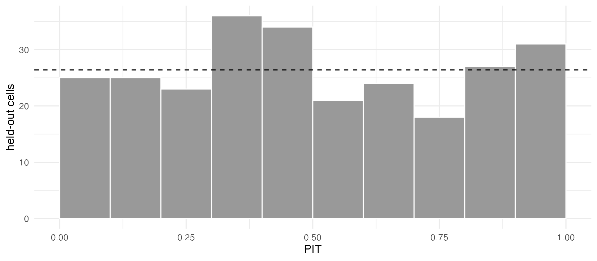
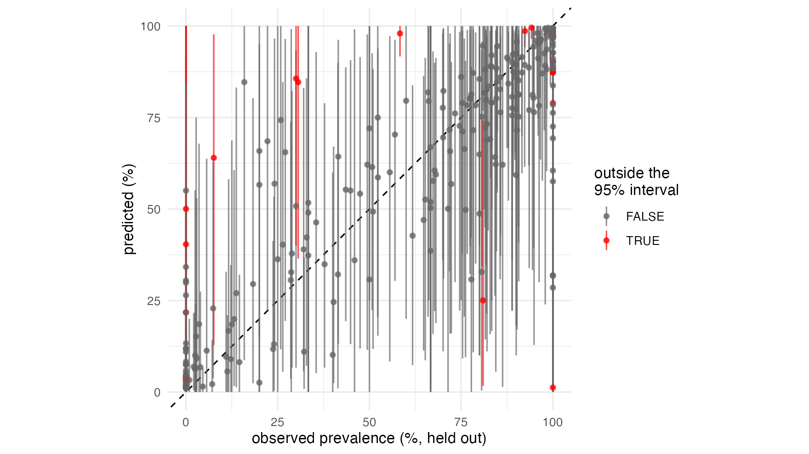

diagnose() says whether the sampler has found the
posterior. It does not say whether the model is any good.
Cross-validation asks a sharper question: how well does a model predict
surveys it has not seen? This tutorial uses the crt K76T data of tutorial 1 to show how to:
- check that a model’s predictive intervals are calibrated;
- compare models on the same held-out data, with an honest standard error;
- hold out whole countries, to test extrapolation rather than interpolation.
1. How crossval() works
crossval() splits the observed area-time cells into
folds. It holds out each fold in turn, refits the model to the rest, and
predicts the held-out cells. Each prediction is scored against the
surveys:
- log score: the log probability the model gave to the observed count. It is higher for better models, and is the main basis for comparison.
- outside the 95% interval: about 5% for a calibrated model. The check uses a randomised PIT (probability integral transform), so 5% is the right target whatever the number tested.
- RMSE and correlation of the predicted against the observed prevalence: easy to read, but blind to the intervals.
Each fold is a full refit, so 10-fold cross-validation costs 10 fits.
The refits can be shorter than a publication run: they only need to pass
diagnose(), as the default settings do for these data
(tutorial 1).
Why not leave-one-out on the fitted model (PSIS-LOO, as in the
loo package)? With one latent value per observed cell, each
cell’s posterior leans heavily on its own data, and the importance
weights become unstable. Refitting is slower, but it is reliable.
2. Five models, one set of folds
The data of tutorial 1:
iso3 <- c("DJI", "ERI", "ETH", "KEN", "SOM", "SSD", "SDN", "UGA")
adm1 <- sf::st_as_sf(geodata::gadm(iso3, level = 1, path = tempdir(), version = "4.1", resolution = 2))
lakes <- rnaturalearth::ne_download(scale = 10, type = "lakes", category = "physical",
returnclass = "sf", destdir = tempdir())
crs <- "+proj=laea +lat_0=8 +lon_0=37 +units=m"
adm1 <- sf::st_make_valid(sf::st_transform(adm1, crs))
lakes <- sf::st_make_valid(sf::st_transform(lakes, crs))
lakes <- lakes[as.numeric(sf::st_area(lakes)) > 1e9, ]
water <- sf::st_intersection(sf::st_union(lakes), sf::st_union(adm1))
adm1 <- sf::st_difference(adm1, water)
adm1 <- adm1[adm1$ENGTYPE_1 != "Water body", ] # what is left of Uganda's lake units
fr <- areal_frame(adm1, id = "GID_1", groups = c(country = "COUNTRY"), link_within = "country",
verbose = FALSE)
tf <- time_frame(1989, 2024, "month")
d <- areal_data(igad_crt76t, fr, tf, y = "positive", k = "tested",
coords = c("longitude", "latitude"), date = "collection_day", verbose = FALSE)Five models: the default of tutorial 1, two simpler ones (without the
cell nugget, and without the trend), and the two covariate models of tutorial 3, whose tables
by_time, by_area and by_cell are
built as there. Each is cross-validated with ten random folds:
models <- list(
default = fit_areal(d),
no_nugget = fit_areal(d, nugget = FALSE),
no_trend = fit_areal(d, formula = ~ 1),
smooth_trend = fit_areal(d, ~ s1 + s2 + s3, covariates = by_time, scale_covariates = FALSE),
kenya_uganda = fit_areal(d, ~ trend() + ku + ku_trend, covariates = list(by_area, by_cell),
scale_covariates = FALSE)
)
cv <- lapply(models, crossval, folds = 10, seed = 1)The same seed gives the same random folds for every
model, so all five are scored on exactly the same held-out cells. Each
refit uses the fitted model’s own settings, here the defaults. For long
jobs, fold = runs some of the folds (e.g. in separate
sessions), and checkpoint_dir lets an interrupted refit
resume.
Five models with ten folds each is fifty refits, and the country
folds of section 5 add eight more: too long for a tutorial. The results
ship with stareal, computed once with exactly this code (the
script is data-raw/crossval_crt76t.R in the source
repository). Load them:
stored <- readRDS(system.file("extdata", "crossval_crt76t.rds", package = "stareal"))
cv <- stored$cv
cv_country <- stored$cv_country
names(cv)
#> [1] "default" "no_nugget" "no_trend" "smooth_trend" "kenya_uganda"
cv$default
#> <stareal_cv> 10-fold cross-validation (seed 1), 10 folds run, 264 cells held out
#> RMSE 19.51 points; 7.6% outside the 95% predictive interval; mean log score -2.713; correlation 0.85
head(cv$default$cells[, c("fold", "id", "time", "y", "k", "obs_prev", "pred_mean", "pred_lo", "pred_hi",
"log_score")])
#> fold id time y k obs_prev pred_mean pred_lo pred_hi
#> 1 1 ETH.9_1 2022-01 37 41 90.24390 71.567192 16.46059609 98.868948
#> 2 1 KEN.1_1 2018-01 0 4 0.00000 11.929335 0.77914953 44.992560
#> 3 1 KEN.11_1 2005-07 273 306 89.21569 87.491721 57.74228702 98.325753
#> 4 1 KEN.14_1 2008-07 26 51 50.98039 49.284065 13.24170709 86.717802
#> 5 1 KEN.14_1 2015-07 5 43 11.62791 16.745688 1.95968862 52.026942
#> 6 1 KEN.14_1 2020-07 0 44 0.00000 1.791509 0.05467599 8.081672
#> log_score
#> 1 -2.9067110
#> 2 -0.4242258
#> 3 -4.2261752
#> 4 -3.4577016
#> 5 -2.5288301
#> 6 -0.49804823. Is the model calibrated?
If the predictive distributions are right, the PIT values are uniform: a flat histogram, with about 5% of the surveys outside their 95% interval.
ggplot(cv$default$cells, aes(pit)) +
geom_histogram(breaks = seq(0, 1, 0.1), fill = "grey60", colour = "white") +
geom_hline(yintercept = nrow(cv$default$cells) / 10, linetype = 2) +
labs(x = "PIT", y = "held-out cells") +
theme_minimal()
Predicted against observed prevalence, with each survey’s 95% predictive interval. That interval is for the survey’s observed prevalence, so it includes the binomial noise of its sample size, and it is what “outside” refers to:
ggplot(cv$default$cells, aes(obs_prev, pred_mean, ymin = rep_lo, ymax = rep_hi, colour = outside)) +
geom_abline(linetype = 2) +
geom_pointrange(size = 0.2, alpha = 0.7) +
scale_colour_manual(values = c(`FALSE` = "grey40", `TRUE` = "red")) +
coord_equal() +
labs(x = "observed prevalence (%, held out)", y = "predicted (%)", colour = "outside the\n95% interval") +
theme_minimal()
The histogram is close to flat, and 20 of the 264 held-out cells (7.6%) are outside their 95% interval, 12 below and 8 above. Out of sample, the default model is close to calibrated, and a little overconfident. The misses are surveys that disagree with their neighbours or with their own unit’s past. Some find K76T in every infection where the model expected far fewer, and some find none where it expected many:
subset(cv$default$cells, outside, c(id, time, y, k, obs_prev, pred_mean, rep_lo, rep_hi, pit))
#> id time y k obs_prev pred_mean rep_lo rep_hi
#> 14 SDN.7_1 2001-07 78 78 100.000000 78.944044 23.044872 100.00000
#> 24 UGA.56_1 1998-12 81 86 94.186047 99.552499 96.511628 100.00000
#> 37 KEN.27_1 2021-01 0 123 0.000000 21.774164 0.000000 91.05691
#> 56 ETH.8_1 2014-07 28 48 58.333333 97.959701 91.666667 100.00000
#> 63 KEN.14_1 2018-01 0 4 0.000000 2.428214 0.000000 25.00000
#> 68 KEN.16_1 2021-01 2 2 100.000000 1.245221 0.000000 1.25000
#> 78 UGA.19_1 2013-01 53 53 100.000000 90.407443 67.924528 100.00000
#> 82 ETH.6_1 2022-01 10 132 7.575758 63.989204 12.878788 97.72727
#> 89 KEN.12_1 2018-01 0 1 0.000000 4.228584 0.000000 100.00000
#> 108 UGA.56_1 2010-01 206 223 92.376682 98.614268 94.170404 100.00000
#> 138 ETH.10_1 2019-01 180 180 100.000000 87.588782 47.763889 100.00000
#> 150 SSD.1_1 2001-07 26 85 30.588235 84.653539 36.470588 100.00000
#> 152 SDN.2_1 2001-07 81 81 100.000000 87.251706 60.493827 98.76543
#> 159 UGA.56_1 2010-12 454 454 100.000000 97.054390 89.207048 99.77974
#> 178 UGA.2_1 2010-07 3 10 30.000000 85.632207 40.000000 100.00000
#> 180 UGA.8_1 2018-07 0 65 0.000000 3.813381 0.000000 16.92308
#> 186 UGA.56_1 2010-07 108 108 100.000000 97.554392 89.814815 100.00000
#> 249 KEN.16_1 2012-01 0 1 0.000000 40.368138 0.000000 100.00000
#> 257 UGA.2_1 2013-07 485 599 80.968280 25.032663 1.669449 74.29883
#> 259 UGA.16_1 2014-07 0 4 0.000000 50.027446 0.000000 100.00000
#> pit
#> 14 0.9818597009
#> 24 0.0054993048
#> 37 0.0069698046
#> 56 0.0006068377
#> 63 0.0023305526
#> 68 0.9996580157
#> 78 0.9987972836
#> 82 0.0086540836
#> 89 0.0123025259
#> 108 0.0070725695
#> 138 0.9985418583
#> 150 0.0115326447
#> 152 0.9827821534
#> 159 0.9957823554
#> 178 0.0124951223
#> 180 0.0215248008
#> 186 0.9764801246
#> 249 0.0015009823
#> 257 0.9879877996
#> 259 0.01145603624. Comparing models
compare_cv() lines the models up cell by cell. Most of
the variation in log score is between cells (some surveys are hard to
predict for any model), and comparing cell by cell removes it.
diff is each model’s mean log score minus the best model’s,
and se_diff its standard error. A difference of less than
about two standard errors is not a clear preference.
All five models were cross-validated on the same folds:
compare_cv(default = cv$default, no_nugget = cv$no_nugget, no_trend = cv$no_trend,
smooth_trend = cv$smooth_trend, kenya_uganda = cv$kenya_uganda)
#> model n_cells mean_log_score diff se_diff pct_outside_95
#> 1 kenya_uganda 264 -2.706357 0.000000000 0.00000000 6.818182
#> 2 smooth_trend 264 -2.708211 -0.001854364 0.01505642 6.818182
#> 3 default 264 -2.713372 -0.007015184 0.01321081 7.575758
#> 4 no_trend 264 -2.715479 -0.009121809 0.01351000 5.681818
#> 5 no_nugget 264 -2.761939 -0.055582211 0.02937629 8.333333
#> rmse correlation
#> 1 19.37963 0.8570542
#> 2 19.50362 0.8549700
#> 3 19.51426 0.8548019
#> 4 19.57580 0.8537889
#> 5 19.99295 0.8473666On log score, the five models are within about two standard errors of each other. These data cannot tell them apart on held-out surveys. Two things still stand out:
- Without the nugget, 8% of surveys fall outside their intervals. The model must then explain every difference between surveys with the smooth field, and it becomes overconfident. The nugget earns its place through calibration, more than through the mean log score.
- The covariate models predict held-out surveys no better, within the noise. Yet tutorial 3 showed them changing the map in Ethiopia and Sudan after their last surveys. Random folds score surveyed area-months, where the data decide whatever the mean. Where there are no surveys, which is where the mean matters most, they are silent.
Keep the default unless there is a reason to prefer another. Section 5 looks at the places random folds cannot see.
5. Spatial cross-validation: holding out whole countries
Random folds hold out scattered cells, and their neighbours in space
and time usually stay in. They test interpolation. To
ask how well the model extrapolates to a country with
no data, give folds a label for each observed cell, here
its country:
country <- fr$groups$country[d$cells$area]
cv_country <- crossval(models$default, folds = country, seed = 1)This is the cv_country loaded above.
cv_country$folds[, c("fold", "n_held", "pct_outside_95", "mean_log_score", "rmse")]
#> fold n_held pct_outside_95 mean_log_score rmse
#> 1 Djibouti 1 0.000000 -0.3287154 26.84958
#> 2 Eritrea 1 0.000000 -4.7560928 19.69273
#> 3 Ethiopia 28 50.000000 -5.8873206 52.95370
#> 4 Kenya 113 7.079646 -3.2272258 35.13655
#> 5 Somalia 2 0.000000 -2.7265848 20.39873
#> 6 South Sudan 6 16.666667 -3.4169469 38.93567
#> 7 Sudan 39 0.000000 -3.5177358 23.02497
#> 8 Uganda 74 12.162162 -3.5171784 33.29600Held out one country at a time, the model does worse on every measure:
rbind(random = cv$default$overall, by_country = cv_country$overall)
#> n_held rmse pct_outside_95 mean_log_score correlation
#> random 264 19.51426 7.575758 -2.713372 0.8548019
#> by_country 264 35.45017 12.121212 -3.628879 0.3653147About 12% of surveys fall outside their intervals, more than twice the target. Ethiopia is the extreme case. Predicted from its neighbours, where K76T has fallen, its held-out surveys are expected at a median of 38%. In fact they find K76T in a median of 90% of infections, and 50% of them fall outside their intervals. Ethiopia is not like its neighbours (tutorial 1 suggests why), and without Ethiopian data nothing in the model can know it. The field’s variance is learnt mostly from differences between neighbouring units and months. Differences between whole countries can be larger.
So where a whole country lacks surveys, treat the map’s intervals as optimistic.
compare_cv() compares models on the same folds, and
refuses folds that differ. Setting one model’s random and spatial scores
side by side, as above, asks a different question: how much harder is
extrapolation than interpolation? Use random folds to choose between
models for the map as a whole, and spatial folds to judge how far to
trust it where there are no surveys.
What next
- 5. Simulate, fit, check: when the truth is known.
-
Reference:
crossval()andcompare_cv().